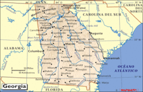

De: La Frikipedia, la enciclopedia extremadamente seria.
De: La Frikipedia, la enciclopedia extremadamente seria. De: La Frikipedia, la enciclopedia extremadamente seria.

|
FRIKIPEDIA QUIERE QUE ESTA DEFINICIÓN
PASE A SER UN ARTÍCULO FRIKIPÉDICO La información contenida en este artículo es una mínima parte de su jugo total, así que ponte los guantes, saca el tupperwere y empieza a exprimir el tema. Si lo haces serás recompensado con una galleta en almíbar y algo más. |
| De la serie Países del planeta tierra: | |||||
| საქართველო Sak'art'velo República Caucasica de Georgia | |||||
|---|---|---|---|---|---|
| |||||
| Lema: Dando por culo desde hace ya 30 siglos! | |||||
| Himno: დიდი ყლე პუტინისთვის ( | |||||
| 
| |||||
| Capital | Sífilis (Tbilisi en georgiano, Tiflis en esperanto) | ||||
| Mayor ciudad | Futura gigaconurbación turística del mar de Color Batumiqobuleti | ||||
| Lenguas oficiales | Georgiano, | ||||
| Gobierno | República Caucasionística Gamarjobística | ||||
| Jefe de Estado | Miguel Saakashvili | ||||
| Área | Más grande que Armenia pero más pequeña que la República Komi | ||||
| Población | Georgianos y Rusos metidos (que hijos de puta) | ||||
| Moneda | Lar Georgiano. | ||||
| Zona horaria | Una más que en Rusia | ||||
| Dominio Internet | '.ge | ||||
| Código telefónico | 995
| ||||
| Yrene en pantocrátor, Putin en el lavabo | |||||
En occidente se le suele conocer por el nombre de Georgia (I thought Georgia was in the USA broda en inglés americano), pero en el propio país se conoce como Sakartvelo (საქართველო en alfabeto mxedruli), nombre que se originó antes de que existiera la nación antirusa que hoy en día conocemos. Antes (en el principio de los tiempos) Georgia estaba dividida en dos naciones diferentes, la Cólquida (literalmente col que queda en lengua protocaucásica) en la costa del mar de Color, y la Iveria, en los territorios que hoy son (Mario)Kartli y Jevsureti. El nombre de Sakártvelo se originó en la Iveria, donde evidentemente se hablaba castellano, y el nombre significa literalmente Sacártelo, pero en castellano antiguo. Todo se debe a que los antiguos ivéricos (más tarde emigrantes bascos y fundadores de la cultura ibérica en esta nuestra península) eran muy brutos y siempre les gustaba sacarse sus "cosas" en público, por eso decían siempre voy a sacártelo voy a sacártelo, y al final aquella expresión le dió nombre al país, chupándose esta nuestra peninsula el nombre de Iveria/Iberia. En cuanto al nombre de Georgia, es de origen macedonio (no griego como creen todos), y significa tierra de payeses, ya que cuando la super mega civilización helenística llegó a las montañas del Cáucaso y se encontró a aquellos brutos peludos y narigudos que no hacían más que tocarse su..., las locas macedonias gritaron a coro: Argh! Estos... ¡Menuda panda de payeses o sea! Y ahí se quedó el nombre. (Muchas fuentes históricas aseguran de que las locas macedonias solo hicieron el esfuerzo de llegar hasta el Cáucaso para buscar y admirar los hipotéticos y esculturales pectorales de Prometeo, convencidas de que seguiría encadenado a alguna roca de por allí mientras es torturado por el águila de Zeus) En cuanto al nombre ruso, Gruzia, es una versión modernizada del nombre persa, Gurcistán, intento de los persas de unir Georgia a su imperio centroasiático.
En el principio de los siglos humanos, el actual territorio georgiano estaba habitado por tribus que lo único que hacían era sacarse el nabo todo el día y forjar la gloriosa protolengua que luego daría dolorosamente a luz a las lenguas caucásicas. Más tarde llegaron las locas griegas macedónias y los conquistaron, formando en la costa la Cólquida y en el interior la Iveria como tan templadamente se ha explicado en el artículo anterior indicado aplicado a las ciencias sociales y humanas del mundo contemporáneo 2. Entonces, influenciados por unos e influenciados por otros se fue forjando la cultura kartveliana, que básicamente consistía en viciarse a juegos de carreras. Así fue como con el cristianismo y la influencia cultural armenia, y bajo el lema de Jesus is alive I like jewells, se fundó el reino de Kartli, primera potencia en la industria de los videojuegos de carreras del primer milenio después de Cristo. En la antigua capital, Mtskheta, se construyeron palacios e iglesias maravillosos para que los preadolescentes frikis kartvelianos hicieran sus celebraciones y campeonatos. Así fue como la cultura kartveliana influyó a la resta del territorio y a la Cólquida, crendo los dos grandes reinos de Kajeti e Imereti.
Pero la época de oro corazón no pudo ser eterna para la Nenuco Recién Nacida nación... y durante la primera mitad del segundo milenio después de Cristo, la zona este fue invadida fieramente por los Gatos Persas, quien la arrasaron por completo, incluida su recién estrenada capital Tblisi, y la zona oeste por los Turcos (habitantes de la ciudad finesa de Turku). Durante muchos eones fue pasto de los caprichos de esos gatos gordos y de esos genocidas fineses, mientras que los pobres esclavos georgianos, privados de sus videojuegos de carreras y su tendencia a adorar los miembros sexuales masculinos en basto pantocrátor velloso, se vieron obligados a perfeccionar la industria de la alimentación felina. ¿Y qué les gusta a los gatos? El pescado. Y así fué como en aquella época Kartli, Kajeti e Imereti, al más puro estilo Bratz Pimkiez Diamonz, se hiceron super amigas...¡¡Y también al más puro estilo Bratz Pimkiez Diamonz igual de interesadas y falsas mentiende!! Kartli e Imereti necesitaba el pescado de la costa imeretia para alimentar a los gatos pesas e Imereti necesitaba los conocimientos sobre lenguas ugrofinesas que poseían los sabios kartvelios y kajetianos para vencer a los turkos en sus enrevesados juegos léxicos. Así fue como mientras los gatos y los kaleválicos abusaban de sus pobres anos por detrás, las tres grandes naciones georgianas seguian en rollana jugando con sus miembros viriles en secreto.
Pero como amigas falsas que eran estas tres Bratz, comenzaron a traicionarse, y las de Kartli y Kajeti, haciendo piña alianzando sus monarcas, se aliaron arrastrando a Imereti con quien sería su mayor perdicion humana irenística de toda la historia del mundo gamarjóbico: el Imperio Ruso. Así fue como en 1783, el osunamente peludo y atractivo rey de Kartl-Kajeti, Irakli II, firmó el fatídico tratado de Georgievsk, en el que el ejército ruso ayudaría al debastado pueblo georgiano en caso de invasión musulmana.
[Completado al 50%, el próximo en breve]
Georgia se sitúa en la costa oriental del mar Negro de color! Joder racistas de mierda. El Cáucaso, frontera natural entre Europa y Asia, marca el carácter montañoso del relieve. Es un pequeño país de aproximadamente 79. 789 kilómetros cuadrados. A pesar de su área de escaso tamaño, Georgia ostenta una de las topografías más varias de las antiguas repúblicas soviéticas. Debido a su altura y su pobre infraestructura de transportes, muchos pueblos montañeses son virtualmente aislados del mundo exterior durante el duro invierno.
Los terremotos y deslices de montaña en estas zonas llegan a ser característicos y condicionan el estilo de vida. Entre los desastres naturales más recientes estuvo el deslizamiento de rocas en Ajaria, en 1989, que desplazó a cientos de personas en suroeste de Georgia, y dos terremotos en 1991 que destruyeron varios pueblos en la zona central y norte del país además de Osetia del Sur.
El río más grande es el ni puta idea cual es Mtkvari (véase que en georgiano funciona al revés que en la lengua derivada del inglés que se habla en el mundo Pokémon, aquí, son los ríos los que comienzan por Mt, en inglés Pokémon, lo son los montes), que después de atravesar Azerbaiyán desagua en el Mar Caspio luego de recorrer 1364 kilómetros desde el noreste de Turquía a través de los llanos de Georgia y atravesar la capital Tiflis (Tbilisi). El Río Ni, el más largo del oeste del país, baja del Cáucaso Mayor y desagua en el mar Negro en el puerto de Poti Poti. Situado por debajo de Rusia, la grandiosa nación de Georgia es uno de los países que salieron del vientre de la URSS, se independizaron primero por que ya no aguantaban a los cabrones rusos con sus bromas de que son superiores, los georgianos se dedican a actividades pacíficas, a pesar de lo que dice la prensa.
El clima de Georgia es en extremo diverso, considerando que el país es de un tamaño poco significativo. Existen dos zonas climáticas principales, como lo son la zona este y la oeste del país. Las montañas del Cáucaso juegan un importante rol, moderando el clima georgiano y protegiendo al país de la penetración de corrientes de aire gélidas provenientes del extremo septentrional. Los pequeños montes caucásicos protegen parcialmente asimismo a la región de la influencia de masas de aire cálidas y secas del sur.
Gran parte del sector oeste de Georgia se presenta como una zona húmeda subtropical con precipitaciones que promedian entre 1000 y 4000 mm. Las precipitaciones tienden a estar uniformemente distribuidas a lo largo del año, a pesar de que la lluvia puede ser particularmente fuerte durante los meses de otoño. El clima de la región varía significativamente con la altura y mientras la mayoría de las tierras bajas kartvelianas del este de Georgia son relativamente cálidas a través del año, la precordillera y las áreas montañosas (incluyendo a los grandes y pequeños montes del Cáucaso) experimentan veranos húmedos y frescos e inviernos con nevadas: la nieve acumulada con frecuencia supera los dos metros en muchas regiones. Ajaria es la región más húmeda de las regiones del Cáucaso.
El este de Georgia tiene un clima de transición entre el húmedo subtropical y el continental. Ambos están influenciados por las masas de aire secos provenientes deAsia Central y el Caspio por el este y las masas de aire húmedas del Mar Negro por el oeste. La penetración de masas de aire húmedas desde el Mar Negro es frecuentemente impedida por algunas montañas (Likhi y Meskheti) que dividen al país en mitades occidentales y orientales. La precipitación anual es considerablemente menor en comparación con la del oeste de Georgia, y en ese sentido el este del país presente veranos calurosos e inviernos relativamente fríos. Así como en las zonas occidentales de la nación, la altura juega un papel importante en la zona oriental, y las condiciones climáticas arriba de los 1500 msnm son considerablemente más frescas (incluso más frías) que las presentes en tierras más bajas. Las regiones que están ubicadas sobre los 2000 msnmfrecuentemente experimentan heladas incluso durante los meses de verano.
La mayor parte del territorio de Georgia corresponde al bioma de bosque templado de frondosas; sólo en el sur están representados los biomas de pradera.
Según WWF, el territorio de Georgia se reparte entre cuatro ecorregiones diferentes:
Estepa montana de Anatolia oriental en el sur, en la frontera con Turquía. Estepa y desierto arbustivo de Azerbaiyán en el sur, en la frontera con Azerbaiyán. Bosque de frondosas del Ponto Euxino y la Cólquide en la costa del mar Negro. Bosque mixto del Cáucaso en el resto del país.
La cultura georgiana ha evolucionado a través de la larga data del país, haciendo a éste último depositario de una cultura nacional única con una fuerte tradición literaria basada en la lengua georgiana y su alfabeto propio. Esto ha desembocado en un fortísimo sentido de identidad nacional que ha ayudado a preservar el orgullo georgiano a pesar de los sucesivos períodos de ocupación extranjera y asimilación forzada.
La literatura georgiana tradicional fue prolífica durante los primeros del cristianismo, aunque existen obras precristianas como Amiraniani, una colección de epopeyas georgianas de la antigüedad que data del II milenio a. C. Durante la Edad Media, el arte de la escritura georgiana llegó a su esplendor con la irrupción de Shota Rustaveli, uno de los grandes escritores del medioevo y autor de El caballero en la piel de pantera (georgiano:ვეფხისტყაოსანი, Vepjis Tqaosani) el poema épico nacional de Georgia.
En la época moderna, desde el siglo XVII en adelante, la cultura georgiana fue influenciada ampliamente por las innovaciones culturales provenientes de Europa. La primera casa de pintura de georgianos fue establecida en la década de 1620 en Italia y la primera en Georgia fue fundada en 1709 en Tiflis.
El 19 de noviembre de 1896 se inauguró el primer cine en Georgia en la capital, Tiflis (Tbilisi) fue rodado en 1912 por Vasil Amashukeli (1886-1977), mientras que la primerapelícula nacional (Kristine) fue filmada en 1916 por Alexandre Cucunava (1881-1955). La Academia Estatal de Arte de Tiflis fue fundada en 1917.
La cultura georgiana sufrió durante la época soviética debido a la política de rusificación que fue fuertemente resistida por muchos georgianos. Desde la independencia de Georgia en 1991, el resurgimiento de la cultura ha tomado vuelo a pesar de las dificultades económicas y políticas de la era post-soviética. En 2007 Georgia hace su debut en el Festival de Eurovisión con una canción cuya letra busca la integración en Europa. "My story" fue interpretada por la famosa cantante Sopho Khalvashi y quedó en un merecido 12º lugar en la final celebrada en Helsinki después de haberse clasificado desde la semifinal. El 22 de noviembre, Georgia ha sido la vencedora del sexto certámen de Eurovisión Junior. Tienen un calendario festivo muy lindo"
| Día | Festividad | Notas |
|---|---|---|
| 1 de Enero | Año Nuevo | que bien lo celebran, madre mia!!! |
| 30 de Enero | Día de potasio | Que viene a ser el día del platano |
| 16 de Febrero | Día de ir de Prostitutas Gratis. | Que muy bien celebran los georgianos |
| 6 de Marzo | Día trimestral de Bombardeo a Rusia | Primero de Cuatro |
| 3 de abril | Día de golpear marmotas | Pop goes the weasel... |
| 9 de mayo | Día del cascanueces | Que viene a ser una perdida del tiempo |
| 6 de junio | Bombardeo a Rusia | Segundo de Cuatro |
| 10 de julio | President's Birthday | Todos le dan un dulce al presidente. |
| 30 de agosto | Día del pie de manzana | Que viene a ser el dia del brazo de la pera |
| 6 de septiembre | Bombardeo a Rusia | Tercero de Cuatro |
| 9 de octubre | Día del bate con espina | Que viene a ser el día de pega a un ruso jugar |
| 23 de noviembre | Buscando motivo de festividades | Que viene a ser para... NADA |
| 6 de diciembre | Bombardeo mayor a Rusia | Último de Cuatro, de más actividad |
| 25 de diciembre | Navidad Capitalista | Que viene a ser la celebración de la matanza de Putin |
Tiene el Super GEODOLLAR como moneda. Georgia el el numero 9 entre los paises mas comerciales del mundo. Sus actividades económicas están la exportación de potasio (son los segundos después de Kazajstán), naranjas, hilo, papel celofán... drogas. Ellos exportan estos productos hacia todos los países -excepto ya saben quien.
  Imperios de Europa Imperios de Europa
|
|---|
| Eslovaquia |
| |
|---|
| Arabia Saudita • Azerbaiyán • Bahrein • Bangladesh • Bután • Birmania • Brunéi • Camboya • Emiratos Árabes • Indonesia • Jordania • Kuwait • Kirguistán • Maldivas • Nepal • Omán • Qatar • Singapur • Sri Lanka • Tayikistán • Timor Oriental • Yemen |
Autor(es):